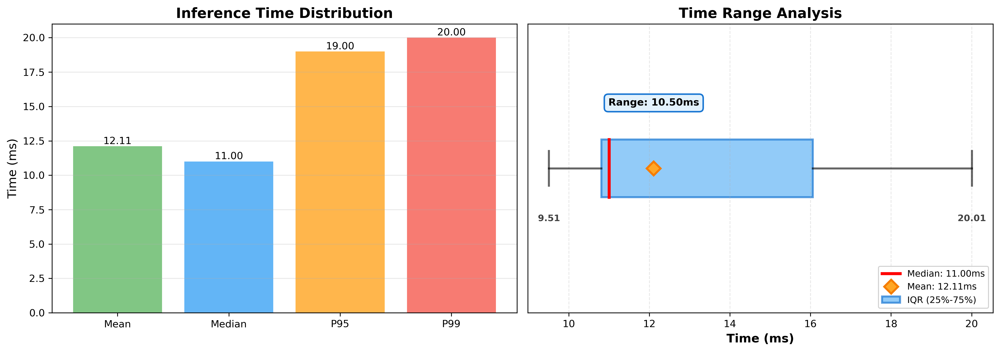
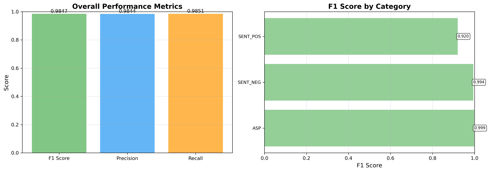
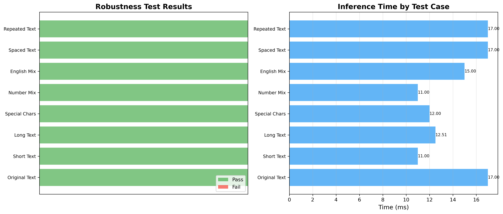

Executive Summary
Average Inference Time
12.11 ms
Model F1 Score
0.9847
Model Size
390.15 MB
Robustness Tests Passed
8/8
Inference Speed Performance
Statistical analysis of algorithm inference latency across 100 samples
Mean Latency
12.11 ms
Median Latency
11.00 ms
95th Percentile
19.00 ms
99th Percentile
20.00 ms

Model Accuracy Metrics
Evaluation metrics on test dataset using micro-averaging
F1 Score
0.9847
Precision
0.9844
Recall
0.9851

Memory Utilization
Model size and runtime memory consumption analysis
Total Parameters
102,274,668
Model Size
390.15 MB
Inference Memory
0.00 MB
Peak Memory
0.03 MB
Robustness Testing
Model stability across diverse input scenarios
| Test Scenario | Status | Latency (ms) | Output Details |
|---|---|---|---|
| Original Text | Pass | 17.00 | Aspects: 2, Sentiments: 3 |
| Short Text | Pass | 11.00 | Aspects: 0, Sentiments: 0 |
| Long Text | Pass | 12.51 | Aspects: 10, Sentiments: 15 |
| Special Characters | Pass | 12.00 | Aspects: 2, Sentiments: 3 |
| Number Mix | Pass | 11.00 | Aspects: 2, Sentiments: 3 |
| English Mix | Pass | 15.00 | Aspects: 2, Sentiments: 3 |
| Spaced Text | Pass | 17.00 | Aspects: 2, Sentiments: 3 |
| Repeated Text | Pass | 17.00 | Aspects: 2, Sentiments: 0 |

Edge Case Testing
Model behavior under boundary conditions and extreme inputs
8 out of 8 edge cases handled successfully
| Test Scenario | Status | Details |
|---|---|---|
| Empty Text | Pass | Results: 0 |
| Single Character | Pass | Results: 0 |
| Pure Punctuation | Pass | Results: 0 |
| Very Long Text | Pass | Results: 2 |
| Pure Numbers | Pass | Results: 0 |
| Pure English | Pass | Results: 0 |
| Special Unicode | Pass | Results: 2 |
| Newline Characters | Pass | Results: 2 |